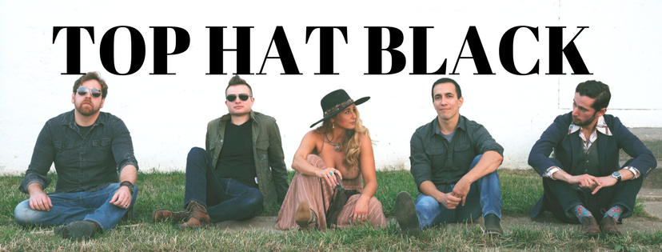

Media
Interviews
Presentations
Press
Healio - Music therapy helps patients with sickle cell disease cope with pain
Plain Dealer - University Hospitals program uses music to teach about sickle cell
Top Hat Black

Pan Ohio Hope Ride
Since 2014, I have participated in the Pan Ohio Hope Ride, a ride across the state of Ohio from Cleveland to Cincinnati (or vice versa).The Pan Ohio Hope Ride supports many of the American Cancer Society’s essential programs, but one of the most important is Hope Lodge. Hope Lodge provides housing and support to cancer patients and their caregivers who live far away from the facility in which they are receiving treatment. You can support my 2023 Pan Ohio Hope Ride Campaign here.